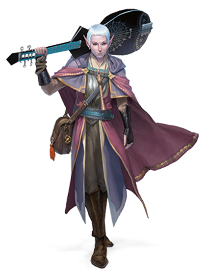

Неважно, кем является бард: учёным, скальдом или проходимцем; он плетёт
магию из слов и музыки, вдохновляя союзников, деморализуя противников,
манипулируя сознанием, создавая иллюзии, и даже исцеляя раны.

Музыка и магия
В мирах D&D слова и музыка это не просто колебания воздуха, тут они
содержат в себе силу. И бард является мастером речей, песен, и
волшебства, заложенного в них. Барды говорят, что вся мультивселенная
была вызвана к существованию и сформирована словами, которые
произнесли боги. И отражения этих первородных Слов Творения до сих пор
звучат в космосе. Музыка бардов это попытка уловить эти отзвуки и
тонко вплести их в свои заклинания.
Наиболее сильной чертой бардов является их исключительная
разносторонность. Многие барды предпочитают держаться не на передовой
в бою, используя свою магию для вдохновения союзников и
препятствования противникам на расстоянии. Но барды способны защищать
себя и в ближнем бою, при необходимости используя магию для укрепления
своих клинков и доспехов. Их заклинания чаще предназначены для
очарования и создания иллюзий, а не для создания явных разрушений. Они
обладают обширными знаниями во множестве тематик и естественные
способности, которые позволяют им делать хорошо практически всё. Барды
становятся мастерами в тех талантах, к которым стремятся их умы,
оттачивая их до совершенства, от музыкальных выступлений до
эзотерических знаний.
Обучение на опыте
Истинные барды не являются обыденной вещью в мире. Не каждый
менестрель, поющий в таверне, или шут, скачущий при королевском дворе,
является бардом. Чтобы обнаружить скрытую в музыке магию, требуется
тяжёлое обучение и некоторая степень природного таланта, чего
большинству трубадуров и жонглёров недостаёт. Однако, определить
разницу между этими исполнителями может быть трудно. Жизнь барда
проходит в странствиях по землям и посвящена сбору знаний,
повествованию историй, и существованию за счёт благодарности публики,
как и у любого другого артиста. Но глубина знаний, уровень
музыкального мастерства и связь с магией ставит бардов на другую
ступень от их собратьев.
Барды редко селятся надолго в одном месте, и их естественная тяга к
странствиям связана с поиском новых сказаний, обучением новым навыкам
и открытию новых горизонтов, что делает карьеру искателя приключений
для них естественным призванием. Каждое приключение — это возможность
чему-то научиться, попрактиковать разные навыки, проникнуть в давно
заброшенные гробницы, обнаружить утраченные произведения магии,
расшифровать старые фолианты, пройтись по незнакомым местам, или
столкнуться с экзотическими существами. Барды любят сопровождать
героев, чтобы засвидетельствовать их свершения из первых рук. Бард,
который может рассказать впечатляющую историю из личного опыта,
зарабатывает известность среди других бардов. Более того, после
повествования такого большого количества историй о великих свершениях
героев, многие барды принимают их близко к сердцу и хотят принять роль
героя сами.
Содание барда
Барды процветают за счет историй, не важно, правдивы они или нет. Ваша
предыстория и мотивы не так важны, как истории, что ваш персонаж
рассказывает о себе. Возможно, у вас было безопасное и ничем не
примечательное детство. В нём нет хороших историй, чтобы поведать о
них, но вы можете изобразить себя сиротой, воспитанным ведьмой на
зловещем болоте. Или ваше детство действительно может быть достойным
истории. Некоторые барды приобретают свою волшебную музыку
необычайными способами, в том числе под влиянием фей или других
сверхъестественных существ.
Были ли вы учеником у мастера, следуя за более опытным бардом, пока не
начали следовать своему собственному пути? Или посещали коллегию, где
вы обучались знаниям бардов и практиковали свою музыкальную магию?
Может быть, вы в молодости сбежали из дома, или став сиротой
подружились с бродячим бардом, который стал вашим наставником. Или вы
могли быть избалованным знатным ребенком, обученным мастером. Может
быть, вы попали в лапы ведьмы, совершив сделку, посулившую вам
музыкальный дар вдобавок к вашей жизни и свободе, но какой ценой?
Быстрое создание
Вы можете быстро создать барда, следуя этим рекомендациям. Во-первых,
у вашей Харизмы должно быть наивысшее значение. Следующей по величине
характеристикой должна быть Ловкость. Во-вторых, выберите предысторию
«артист». В-третьих, получите заговоры злая насмешка и пляшущие
огоньки вместе со следующими заклинаниями 1 уровня: волна грома,
лечащее слово, обнаружение магии и очарование личности.
Классовые умения
Барды обладают следующими классовыми умениями.
Хиты
- Кость Хитов: 1d8 за каждый уровень барда
- Хиты на 1 уровне: 8 + модификатор Телосложения
-
Хиты на следующих уровнях: 1d8 (или 5) + модификатор
Телосложения за каждый уровень барда после первого
Владение
- Доспехи: Лёгкие доспехи
-
Оружие: Простое оружие, длинные мечи, короткие мечи, рапиры,
ручные арбалеты
- Инструменты: Три музыкальных инструмента на ваш выбор
- Спасброски: Ловкость, Харизма
- Навыки: Выберите три любых
Снаряжение
Вы начинаете со следующим снаряжением в дополнение к снаряжению,
полученному за вашу предысторию:
- а) рапира, б) длинный меч или в) любое простое оружие
- а) набор дипломата или б) набор артиста
- а) лютня или б) любой другой музыкальный инструмент
- Кожаный доспех и кинжал
Использование заклинаний
Вы научились изменять ткань реальности в соответствии с вашими волей и
музыкой. Ваши заклинания являются частью вашего обширного репертуара;
это магия, которой вы найдёте применение в любой ситуации.
Бард
| Уровень |
Бонус мастерства |
Умения |
Известные заговоры |
Известные заклинания |
Ячейки заклинаний на уровень заклинания |
| 1 |
2 |
3 |
4 |
5 |
6 |
7 |
8 |
9 |
| 1 |
+2 |
Использование заклинаний, Вдохновение барда (d6) |
2 |
4 |
2 |
- |
- |
- |
- |
- |
- |
- |
- |
| 2 |
+2 |
Мастер на все руки, Песнь отдыха (d6) |
2 |
5 |
3 |
- |
- |
- |
- |
- |
- |
- |
- |
| 3 |
+2 |
Коллегия бардов, Компетентность |
2 |
6 |
4 |
2 |
- |
- |
- |
- |
- |
- |
- |
| 4 |
+2 |
Увеличение характеристик |
3 |
7 |
4 |
3 |
- |
- |
- |
- |
- |
- |
- |
| 5 |
+3 |
Вдохновение барда (d8), Источник вдохновения |
3 |
8 |
4 |
3 |
2 |
- |
- |
- |
- |
- |
- |
| 6 |
+3 |
Контрочарование, Умение коллегии бардов |
3 |
9 |
4 |
3 |
3 |
- |
- |
- |
- |
- |
- |
| 7 |
+3 |
- |
3 |
10 |
4 |
3 |
3 |
1 |
- |
- |
- |
- |
- |
| 8 |
+3 |
Увеличение характеристик |
3 |
11 |
4 |
3 |
3 |
2 |
- |
- |
- |
- |
- |
| 9 |
+4 |
Песнь отдыха (d8) |
3 |
12 |
4 |
3 |
3 |
3 |
1 |
- |
- |
- |
- |
| 10 |
+4 |
Вдохновение барда (d10), Компетентность, Тайны магии |
4 |
14 |
4 |
3 |
3 |
3 |
2 |
- |
- |
- |
- |
| 11 |
+4 |
- |
4 |
15 |
4 |
3 |
3 |
3 |
2 |
1 |
- |
- |
- |
| 12 |
+4 |
Увеличение характеристик |
4 |
15 |
4 |
3 |
3 |
3 |
2 |
1 |
- |
- |
- |
| 13 |
+5 |
Песнь отдыха (d10) |
4 |
16 |
4 |
3 |
3 |
3 |
2 |
1 |
1 |
- |
- |
| 14 |
+5 |
Тайны магии, Умение коллегии бардов |
4 |
18 |
4 |
3 |
3 |
3 |
2 |
1 |
1 |
- |
- |
| 15 |
+5 |
Вдохновение барда (d12) |
4 |
19 |
4 |
3 |
3 |
3 |
2 |
1 |
1 |
1 |
- |
| 16 |
+5 |
Увеличение характеристик |
4 |
19 |
4 |
3 |
3 |
3 |
2 |
1 |
1 |
1 |
- |
| 17 |
+6 |
Песнь отдыха (d12) |
4 |
20 |
4 |
3 |
3 |
3 |
2 |
1 |
1 |
1 |
1 |
| 18 |
+6 |
Тайны магии |
4 |
22 |
4 |
3 |
3 |
3 |
3 |
1 |
1 |
1 |
1 |
| 19 |
+6 |
Увеличение характеристик |
4 |
22 |
4 |
3 |
3 |
3 |
3 |
2 |
1 |
1 |
1 |
| 20 |
+6 |
Превосходное вдохновение |
4 |
22 |
4 |
3 |
3 |
3 |
3 |
2 |
2 |
1 |
1 |
Заговоры
Вы знаете два заговора из списка доступных для барда на ваш выбор. При
достижении более высоких уровней вы выучите новые, в соответствии с
колонкой «известные заговоры».
Ячейки заклинаний
Таблица «Бард» показывает, сколько ячеек заклинаний у вас есть для
заклинаний 1 и других уровней. Для использования заклинания вы должны
потратить ячейку соответствующего, либо превышающего уровня. Вы
восстанавливаете все потраченные ячейки в конце продолжительного
отдыха. Например, если вы знаете заклинание 1 уровня лечение ран, и у
вас есть ячейки 1 и 2 уровней, вы можете использовать его с помощью
любой из этих ячеек.
Известные заклинания первого и более высоких уровней
Вы знаете четыре заклинания 1 уровня на свой выбор из списка доступных
барду.
Колонка «известные заклинания» показывает, когда вы сможете выучить
новые заклинания. Уровень заклинаний не должен превышать уровень самой
высокой имеющейся у вас ячейки заклинаний. Например, когда вы
достигнете 3 уровня в этом классе, вы можете выучить одно новое
заклинание 1 или 2 уровня.
Кроме того, когда вы получаете новый уровень в этом классе, вы можете
одно из известных вам заклинаний барда заменить на другое из списка
барда, уровень которого тоже должен соответствовать имеющимся ячейкам
заклинаний.
Базовая характеристика заклинаний
При накладывании заклинаний бард использует свою Харизму. Ваша магия
проистекает из сердечности и душевности, которую вы вкладываете в
исполнение музыки и произнесение речей. Вы используете Харизму в
случаях, когда заклинание ссылается на базовую характеристику. Кроме
того, вы используете Харизму при определении Сл спасбросков от ваших
заклинаний, и при броске атаки заклинаниями.
-
Сл спасброска = 8 + бонус мастерства + модификатор Харизмы
-
Модификатор броска атаки = бонус мастерства + модификатор
Харизмы
Исполнение ритуалов
Вы можете исполнить любое известное вам заклинание барда в качестве
ритуала, если заклинание позволяет это.
Фокусировка заклинания
Вы можете использовать ваш музыкальный инструмент в качестве
фокусировки для ваших заклинаний барда.
Вдохновение барда
Своими словами или музыкой вы можете вдохновлять других. Для этого вы
должны бонусным действием выбрать одно существо, отличное от вас, в
пределах 60 фт., которое может вас слышать. Это существо получает
кость бардовского вдохновения — d6.
В течение следующих 10 минут это существо может один раз бросить эту
кость и добавить результат к проверке характеристики, броску атаки или
спасброску, который оно совершает. Существо может принять решение о
броске кости вдохновения уже после броска к20, но должно сделать это
прежде, чем Мастер объявит результат броска. Как только кость
бардовского вдохновения брошена, она исчезает. Существо может иметь
только одну такую кость одновременно.
Вы можете использовать это умение количество раз, равное модификатору
вашей Харизмы, но как минимум один раз. Потраченные использования
этого умения восстанавливаются после продолжительного отдыха.
Ваша кость бардовского вдохновения изменяется с ростом вашего уровня в
этом классе. Она становится d8 на 5 уровне, d10 на 10 уровне и d12 на
15 уровне.
Мастер на все руки
Начиная со 2 уровня вы можете добавлять половину бонуса мастерства,
округлённую в меньшую сторону, ко всем проверкам характеристик, куда
этот бонус ещё не включён.
Песнь отдыха
Начиная со 2 уровня вы с помощью успокаивающей музыки или речей можете
помочь своим раненым союзникам восстановить их силы во время короткого
отдыха. Если вы, или любые союзные существа, способные слышать ваше
исполнение, восстанавливаете хиты в конце короткого отдыха, каждый из
вас восстанавливает дополнительно 1d6 хитов. Для того, чтобы
восстановить дополнительные хиты, существо должно потратить в конце
короткого отдыха как минимум одну Кость Хитов.
Количество дополнительно восстанавливаемых хитов растёт с вашим
уровнем в этом классе: 1d8 на 9 уровне, 1d10 на 13 уровне и 1d12 на 17
уровне.
Коллегия бардов
На 3 уровне вы углубляетесь в традиции выбранной вами коллегии бардов:
коллегии знаний или коллегии доблести. Обе они описаны в конце
описания класса. Этот выбор предоставляет вам умения на 3, 6 и 14
уровнях.
Компетентность
На третьем уровне выберите 2 навыка из тех, которыми вы владеете. Ваш
бонус мастерства для этих навыков удваивается.На 10 уровне вы можете
выбрать ещё 2 навыка и получить для них это преимущество.
Увеличение характеристик
При достижении 4, 8, 12, 16 и 19 уровней вы можете повысить значение
одной из ваших характеристик на 2 или двух характеристик на 1. Как
обычно, значение характеристики при этом не должно превысить 20.
Источник вдохновения
Начиная с 5 уровня вы восстанавливаете истраченные вдохновения барда и
после короткого и после продолжительного отдыха.
Контрочарование
На 6 уровне вы получаете возможность использовать звуки или слова силы
для разрушения воздействующих на разум эффектов. Вы можете действием
начать исполнение, которое продлится до конца вашего следующего хода.
В течение этого времени вы и все дружественные существа в пределах 30
фт. от вас совершают спасброски от запугивания и очарования с
преимуществом. Чтобы получить это преимущество, существа должны
слышать вас. Исполнение заканчивается преждевременно, если вы
оказываетесь недееспособны, теряете способность говорить, или
прекращаете исполнение добровольно (на это не требуется действие).
Тайны магии
К 10 уровню вы успели набрать знаний из самого широкого спектра
магических дисциплин. Выберите два заклинания любого класса, включая
ваш собственный. Эти заклинания должны быть того уровня, который вы
можете использовать, или являться заговорами.
Теперь эти заклинания считаются для вас заклинаниями барда, и они уже
включены в общее количество известных вам заклинаний согласно таблице
«Бард». Ещё по два заклинания других классов вы выучите на 14 и 18
уровнях.
Превосходное вдохновение
При достижении 20 уровня, если на момент броска инициативы у вас не
осталось неиспользованных вдохновений, вы получаете одно.
Коллегии бардов
Барды не любят одиночества. Они разыскивают друг друга, чтобы
обменяться песнями и историями, похвастаться достижениями и поделиться
знаниями. Барды образуют открытые ассоциации, называемые коллегиями,
которые помогают им собираться вместе, и способствуют сохранению
традиций.
Коллегия доблести
Барды коллегии доблести это отважные скальды, чьи сказания не дают
забыть великих героев прошлого и вдохновляют на подвиги нынешних
героев. Такие барды собираются в медовых залах или вокруг походных
костров, чтоб воспеть великие свершения прошлого и настоящего. Они
путешествуют, чтобы стать очевидцами великих событий, и не дать
памяти о них угаснуть. Своими песнями они вдохновляют на достижения,
достойные памяти предков.
дополнительные навыки
Присоединяясь к коллегии доблести на 3 уровне, вы получаете владение
средними доспехами, щитами и воинским оружием.
Боевое вдохновение
При достижении 3 уровня вы узнаёте, как вдохновлять других в бою.
Существо, получившее от вас кость бардовского вдохновения, может
бросить эту кость и добавить результат к своему броску урона
оружием. В качестве альтернативы, если существо атаковано, оно может
реакцией совершить бросок кости вдохновения и добавить результат к
своему КД от этой атаки. Оно может сделать это после броска атаки,
но до того, как узнает, попали ли по нему.
Дополнительная атака
Начиная с 6 уровня, если вы в свой ход совершаете действие Атака, вы
можете совершить две атаки вместо одной.
Боевая магия
На 14 уровне вы научились сплетать использование заклинаний и оружия
в одно гармоничное действие. Если вы действием используете
заклинание барда, вы можете бонусным действием совершить одну атаку
оружием.
Коллегия знаний
Барды коллегии знаний понемногу осведомлены обо всём на свете. Они
собирают крупицы знаний отовсюду, будь то научные труды или
крестьянские побасенки. Напевают ли они народные баллады в таверне,
или исполняют изысканные композиции при дворе, эти барды используют
свой талант, чтобы очаровать публику. И когда смолкают аплодисменты,
публика может обнаружить себя рассказывающей все свои секреты,
начиная со сплетен местного прихода, и заканчивая подробностями
своей верности королю.
Лояльность таких бардов покоится на стремлении к красоте и правде, а
не на верности монархам или приверженности к религиозным догматам.
Дворяне, содержащие таких бардов в качестве советников или
герольдов, хорошо знают, что бард скорее скажет неприятную правду,
чем благоразумно промолчит.
Члены коллегии собираются в библиотеках, а иногда даже в колледжах,
с настоящими классами и общежитиями. Там они делятся друг с другом
знаниями. Они также посещают фестивали и общественные собрания, где
могут выявлять растратчиков, разоблачать лжецов или выставлять на
посмешище самоуверенных политиков.
Дополнительные навыки
Если вы по достижении 3 уровня присоединяетесь к коллегии знаний, вы
овладеваете тремя навыками на ваш выбор.
Острое словцо
Также на 3 уровне вы узнаёте, как использовать собственное
остроумие, чтобы отвлечь, смутить или по-другому подорвать
способности и уверенность противников. Если существо, которое вы
можете видеть, в пределах 60 фт. от вас совершает бросок атаки,
урона или проверку характеристики, вы можете реакцией потратить одну
из ваших костей бардовского вдохновения, и вычесть результат броска
этой кости из броска этого существа. Вы можете принять решение об
использовании этой способности после броска существа, но до того
момента, когда Мастер объявит результат броска или проверки.
Существо не подвержено этой способности, если не может слышать вас,
или обладает иммунитетом к очарованию.
Дополнительные тайны магии
На 6 уровне вы можете выучить 2 заклинания из доступных любому
классу на свой выбор. Их уровень не должен превышать уровня
заклинаний, которые вы можете использовать на этом уровне. Они также
могут быть заговорами. Выбранные заклинания теперь считаются для вас
заклинаниями барда, но максимальное количество заклинаний, которое
вы можете знать, не меняется.
Непревзойдённый навык
Начиная с 14 уровня, если вы совершаете проверку характеристики, вы
можете бросить кость бардовского вдохновения и добавить результат к
проверке. Вы можете принять решение об использовании этой
способности после броска проверки, но до того, как Мастер объявит
результат этой проверки.